Explored the viability of automated web accessibility tools by fine-tuning BLIP, a vision-language model, on the Flickr30k dataset to generate image alt-text. Built a custom PyTorch training pipeline with beam search inference, achieving a stabilized validation loss of ~2.01 across 3 training epochs.
Identified key limitations of automated captioning for accessibility by running controlled image-processing experiments, finding the model consistently missed specific actions and contextual detail. Communicated these findings through a full project walkthrough video and reproducible Colab notebooks.
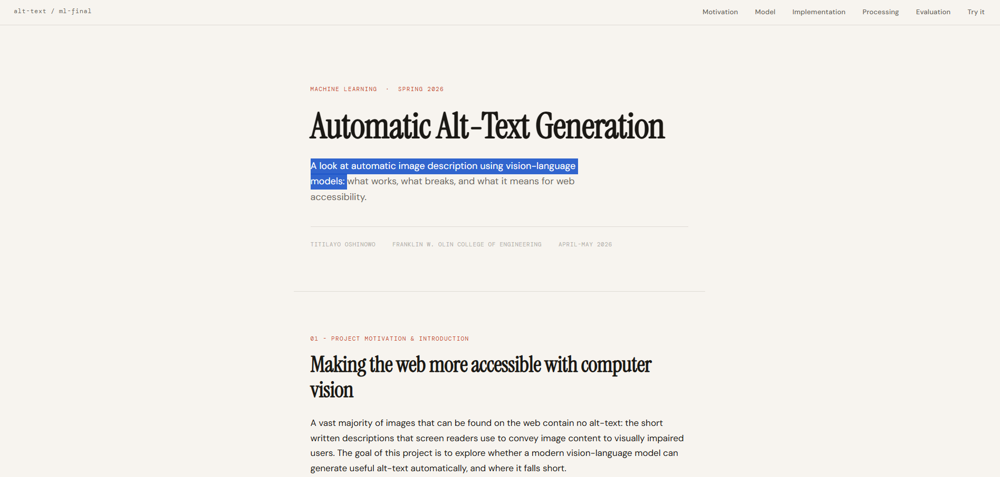
Developed embedded firmware in Arduino IDE to enable real-time motion and vital sign tracking on a resource-constrained wearable device, engineering closed-loop sensor calibration and signal conditioning pipelines to ensure accurate heart rate, step, and activity detection under dynamic conditions. Built a user-centered wearable interface delivering real-time, actionable feedback on the device's small screen.
Designed and implemented a web-based dashboard for remote visualization, trend analysis, and system documentation, integrating interactive charts and live data updates. Applied software-hardware integration practices and control logic design to deliver a cohesive, functional wearable system spanning firmware, real-time processing, and UI/UX.
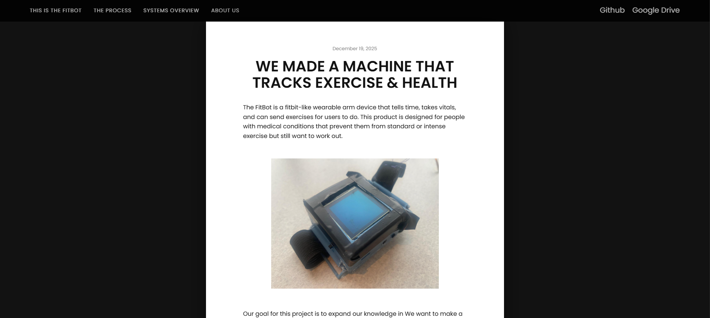
Modeled the pharmacokinetics of intravenous amiodarone, a drug with complex, multi-phase distribution and elimination behavior, by building one- and two-compartment ODE models in Python and numerically solving them with scipy.integrate.solve_ivp. Validated model accuracy against published literature by computing RMSE-based error metrics between simulated and experimental drug concentration data.
Assessed model robustness and identified key drivers of drug behavior by conducting a sensitivity analysis, varying core parameters (clearance, volume of distribution, inter-compartment flow) by ±20%. Ensured code correctness and reliability across the modeling pipeline by writing a full pytest test suite covering ODE definitions, simulation, and validation logic.
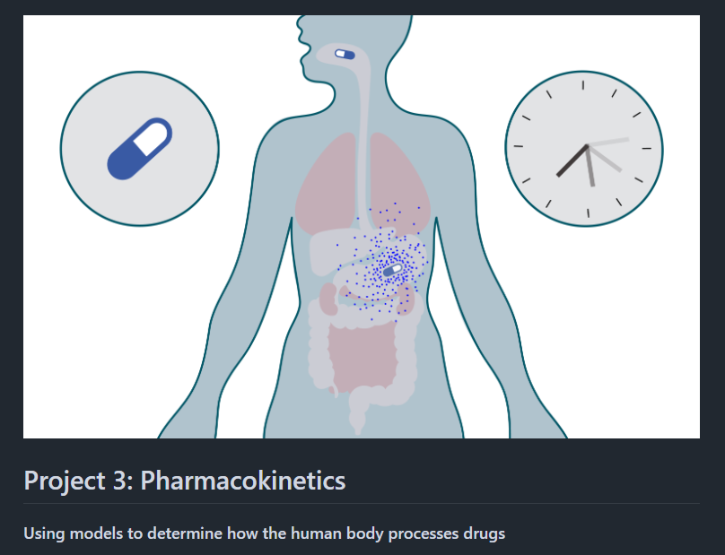
Identified 7 Trojan asteroid families from a catalog of 11,801 asteroids by implementing the Zappalà velocity metric combined with DBSCAN clustering, benchmarked against the AstDys ground truth catalog. Computed a ~69.6 million-entry pairwise distance matrix using scipy.spatial.distance.pdist with a custom physics-based metric, then applied sklearn's DBSCAN to recover dense clusters while excluding background noise.
Achieved 100% completeness across all 7 target families by tuning the DBSCAN velocity cutoff (eps = 50 m/s) through systematic parameter sweeping, outperforming the classical hierarchical clustering approach which suffered from cluster-chaining effects. Evaluated results against ground truth using completeness and contamination metrics, and built a modular Python pipeline (preprocessing, clustering, evaluation, visualization) that runs end-to-end from raw data to publication-ready plots.
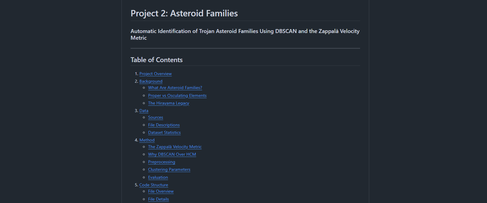
Modeled ant trail network formation using a cellular automaton simulation based on Watmough & Edelstein-Keshet's foraging ant paper, by implementing agent-based modeling to simulate hundreds of individual ants with local sensing capabilities on a 220x220 grid. Built a "Fork Algorithm" using extreme forward bias to replicate realistic branching structures, successfully modeling the transition from random exploration to established foraging trunks.
Validated agent behaviors against the source paper's mathematical rules by writing a robust pytest test suite covering movement, pheromone decay, and boundary conditions. Enabled exploration of different network topologies by building a tunable parameter system (fidelity, evaporation rate, deposition) in constants.py, benchmarked against two case studies (Constant and Piecewise Linear Fidelity) from the original paper.
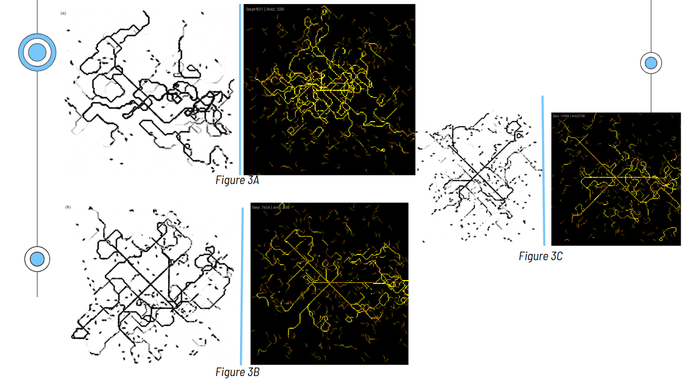
Built a multithreaded terminal chat server in C using raw TCP sockets and POSIX threads, enabling multiple clients to connect and exchange messages in real time. Implemented a mutex-protected linked list to safely track connected clients across threads, along with a broadcast function to relay messages to all users except the sender.
Ensured reliability and safe shutdown by implementing a graceful SIGINT handler that closes all client connections and frees memory before exiting. Added timestamped server-side logging to track client connections, disconnections, and message activity in real time.
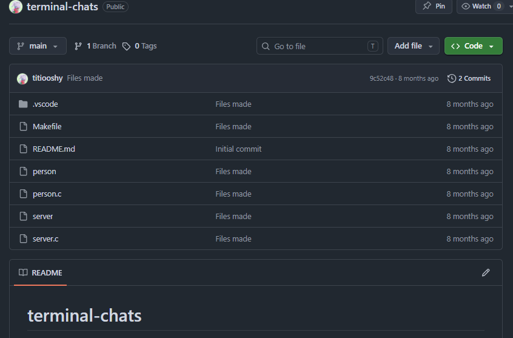
Applied group theory and modular arithmetic concepts from discrete math to financial security, by implementing the Verhoeff check digit algorithm in Python to validate the authenticity of bank note numbers. Built a dual-mode command-line interface allowing users to either verify an existing bank note number or generate a valid check digit for a given number.
Collaborated in a 4-person team to design and build the algorithm's core validation logic, ensuring accurate detection of invalid or tampered numbers through modular checksum computation. Structured the codebase into separate modules for algorithm logic and user interaction, supporting clear separation of concerns and ease of testing.
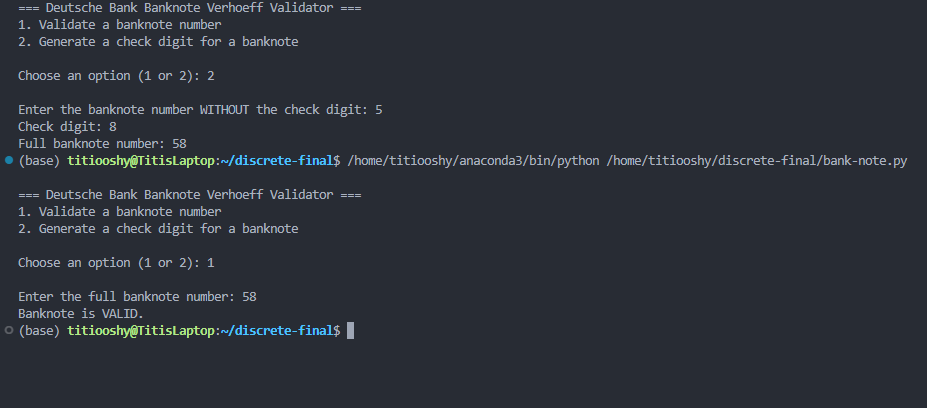
Designed an embedded robotic system integrating dual IR reflectance sensors, DC motors, and an Arduino-based control loop, enabling autonomous line-following through differential drive motor control. Performed sensor calibration and signal conditioning, computing dynamic threshold values from carpet and tape readings, to achieve reliable tape detection across varying floor surfaces.
Developed a real-time closed-loop feedback controller using boolean sensor logic to drive proportional turning corrections, adjusting motor speed and direction to maintain path tracking during dynamic movement. Applied control systems principles and iterative testing to optimize turning responsiveness and stability, refining motor speed, delay timing, and sensor placement to achieve smooth, accurate line-following performance.
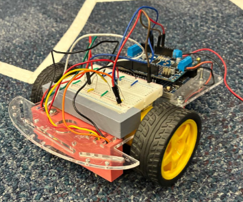
Prototyped a DIY 3D scanning system by integrating an Arduino, an infrared distance sensor, and a custom pan/tilt rig, designing and 3D-printing a mechanical housing in SolidWorks to enable synchronized panning and tilting motion. Programmed servo-driven sweep control and calibrated the IR sensor using a power-law voltage-to-distance fit, validating accuracy through calibration error plots comparing predicted versus actual measurements.
Converted raw sensor data into 2D and 3D visualizations by transforming pan/tilt scan angles from spherical to Cartesian coordinates in MATLAB, bridging hardware design with software modeling. Diagnosed sources of scan noise through systematic testing of wiring, trigonometric calculations, and servo resolution, identifying mechanical housing instability as the primary driver of data inaccuracy.
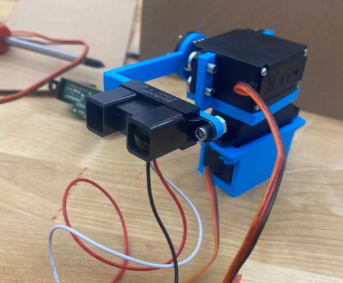
Enabled full network distance analysis across weighted graphs by implementing Dijkstra's algorithm and the Floyd-Warshall algorithm in Python using NetworkX, computing both single-source and all-pairs shortest paths. Supported flexible node and edge configurations for reusability across graph structures, by designing modular graph setup utilities.
Verified pathfinding behavior and algorithm correctness by developing graph visualization components. Compared performance tradeoffs between shortest-path approaches by applying algorithmic complexity analysis, writing clean, readable code organized around separation of concerns.
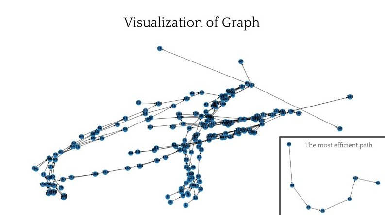
Simulated an anemometer's rotational speed sensing by designing a circuit around a clamp pendulum sensor and 3D-printed propeller, building a calibration curve linking voltage output to rotational speed through voltage readings collected across varying speeds. Minimized noise and ensured precise measurements by implementing high-pass filtering and op-amp gain control.
Achieved a desired cutoff frequency and accurate signal amplification by calculating resistor and capacitor values for the filter and gain stages. Validated circuit performance and established a linear relationship between speed and voltage by analyzing oscilloscope data and Bode plots.
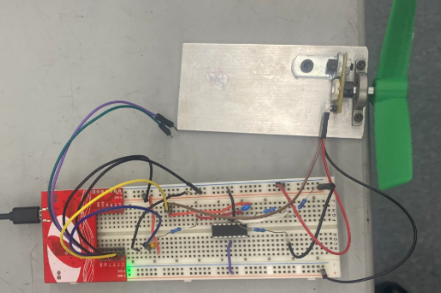
Structured the game for modularity and maintainability by implementing the Model-View-Controller (MVC) architecture, separating game logic, user interface, and input handling. Built interactive game mechanics including bubble motion, collision detection, scoring, and game progression, applying object-oriented programming to support scalability and simplify debugging.
Ensured responsive and accurate player interactions by developing real-time input handling and event-driven logic. Delivered smooth visuals and an engaging gameplay experience by implementing 2D graphics rendering and animation logic.
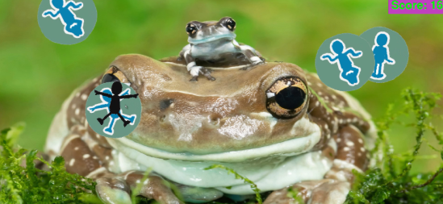
Simulated a Neato robot navigating a parametric path in MATLAB by modeling tangent-vector velocity to guide the robot's motion along the trajectory. Reduced trajectory error in real time by building course correction algorithms that leveraged encoder feedback to adjust wheel velocities.
Evaluated robot motion and error correction performance over extended paths by analyzing and visualizing wheel dynamics and trajectory accuracy. Validated the robustness of the correction algorithm by testing its performance across varied and extended path conditions.
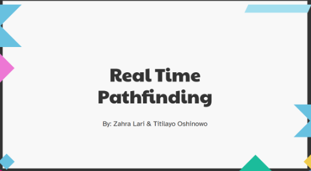
Predicted the equilibrium shape of a physical catenary bridge by modeling it as a potential energy-governed system, characterizing rubber band stiffness and natural length through linear regression on experimental force-displacement data. Simulated vertex positions using unconstrained gradient descent with numerical gradient approximation via finite differences, validating results by comparing predicted shapes against measured bridge geometry.
Improved model accuracy for the inextensible string bridge by implementing constrained (projected) gradient descent, enforcing a fixed total string length as an optimization constraint via a penalty term. Identified stiffness measurement as the primary source of prediction error by analyzing discrepancies between simulated and measured bridge shapes across both rubber band and string configurations.
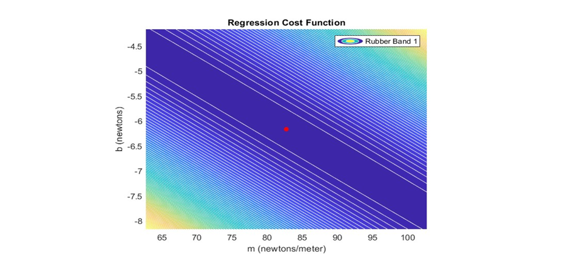
Extracted structured program and mission data from Wikipedia's "Human Spaceflight Programs" page by performing web scraping pipelines using Beautiful Soup, building a two-tiered data processing architecture to ensure accuracy and completeness across program metadata and individual mission records. Enabled correlation studies and trend identification by performing data cleaning, aggregation, and statistical analysis using Pandas.
Communicated insights clearly to technical and non-technical audiences by creating dynamic visualizations in Matplotlib integrated directly within the Jupyter Notebook. Co-authored a reproducible computational essay blending code, narrative, and visualizations for professional reporting and knowledge sharing.
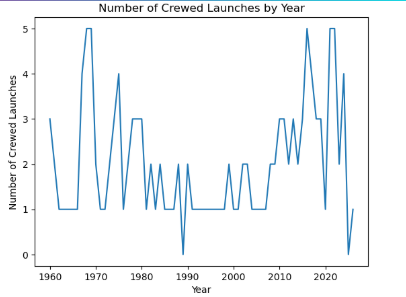
Achieved precise alignment between human facial geometry and character models by developing a MATLAB algorithm that detects facial landmarks and translates them into stylized character representations. Improved accuracy and computational efficiency by engineering feature extraction and pattern matching methods alongside preprocessing and transformation techniques.
Enabled automated face-to-character transformation by integrating computer vision into a working visualization pipeline. Ensured reproducibility and easy adaptation to new character sets by thoroughly documenting the codebase.
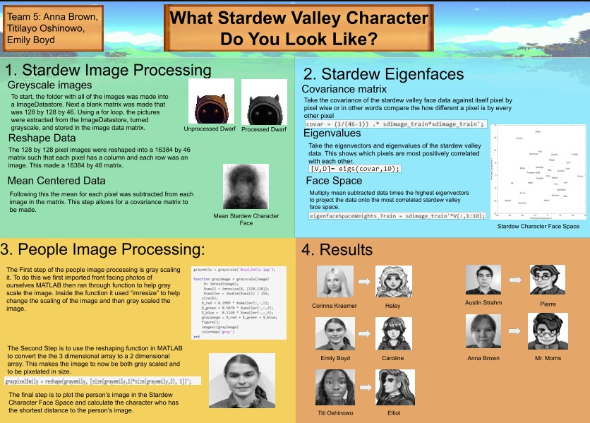